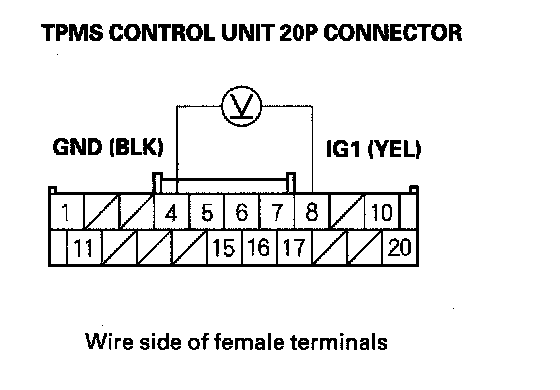

Low Pressure Indicator Does Not Come ON, and No DTCs Are Stored
Low pressure indicator does not come on, and no DTCs are stored1. Turn the ignition switch ON (II).
2. Check the low pressure indicator for several seconds when the ignition switch is turned ON (II).
Did the indicator come on and then go off?
YES - Go to step 3.
NO - Go to step 7.
3. Turn the ignition switch OFF.
4. Check the pressure in all four tires.
Is the tire pressure 175 kPa (1.8 kgf/cm2, 25 psi) or less?
YES - Go to step 5.
NO - The system is OK at this time.
5. Turn the ignition switch ON (II).
6. Check the TIRE PRESSURE in the TPMS DATA LIST with the HDS, and compare with measured actual tire pressure.
NOTE: If the HDS screen shows not defined for sensor status, turn the ignition switch OFF, rotate the appropriate tire 1/4 turn, then turn the ignition switch ON (II) and try again. If not defined is still shown, repeat the procedure in the previous sentence until NORMAL is shown.
Is the indicated tire pressure on the HDS within 40 kPa (0.4 kgf/cm2, 6 psi) of the actual tire pressure?
YES - Go to step 7.
NO - Replace the tire pressure sensor.
7. Wait about 5 seconds with the ignition switch turned ON (II).
8. Check for gauge DTCs with the HDS.
Is any gauge DTC indicated?
YES - Troubleshoot the indicated gauge DTC.
NO - Go to step 9.
9. Turn the ignition switch OFF.
10. Disconnect the TPMS control unit 20P connector.
11. Measure voltage between TPMS control unit 20P connector terminals No. 4 and No. 8.

Is there battery voltage?
YES - Repair short to power in the wire between the TPMS control unit and the No. 21 (7.5 A) fuse in the under-dash fuse/relay box.
NO - Check for loose terminals and poor connections at the TPMS control unit. If necessary, substitute a known-good TPMS control unit and recheck.